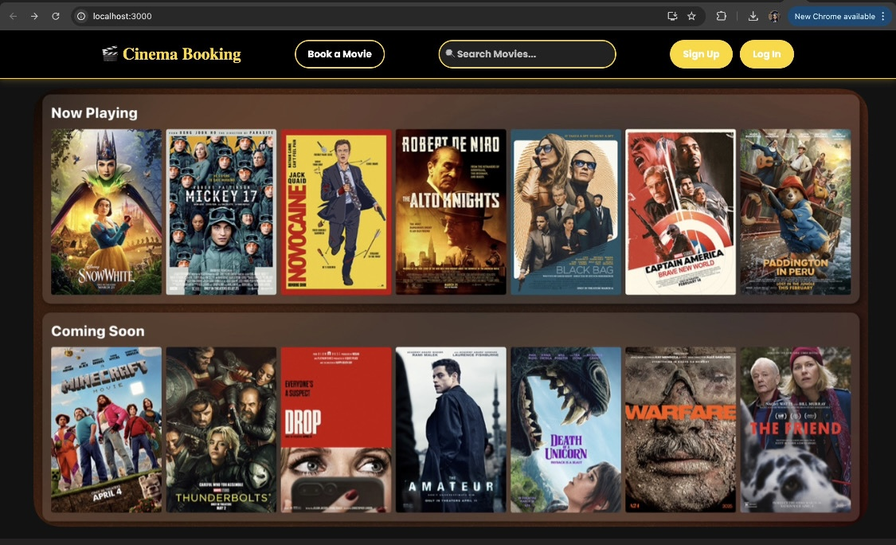
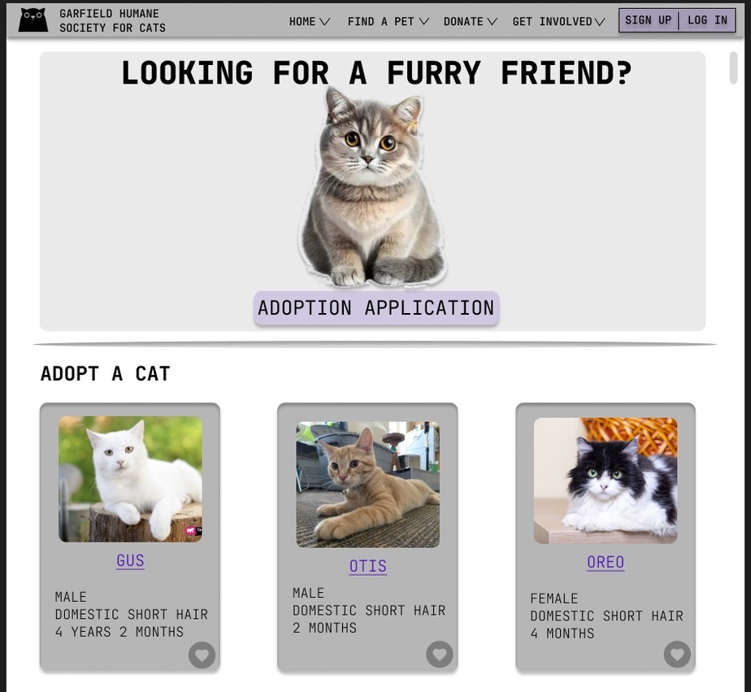

sustAIn iOS SwiftUI App
Developed sustAIn, an iOS app that scans product barcodes, retrieves ingredient data via OpenFoodFacts API, and uses generative AI to suggest sustainable alternatives. Integrated Firebase for user authentication and Core Data for local barcode history.
Cinema E Booking Website
Built a web-based ticket booking website enabling users to browse movies, view showtimes, and reserve seats. Essentially everything a cinema booking system can perform, using Javascript, React, and MySQL. Implemented user authentication, real-time seat selection, and payment integration for a seamless booking experience.
Garfield Humane Society for Cats
Created an adoption webpage using JavaScript, HTML/CSS, and React. Utilized Figma and Canva to design a visually appealing and user-friendly layout. Applied Human-Computer Interaction (HCI) principles, focusing on color schemes, responsiveness, and scalability to enhance user experience.
